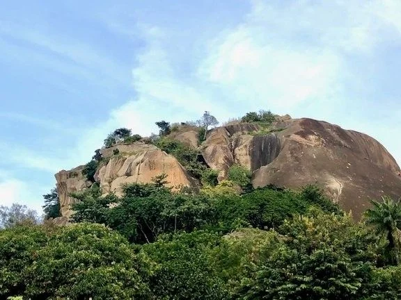
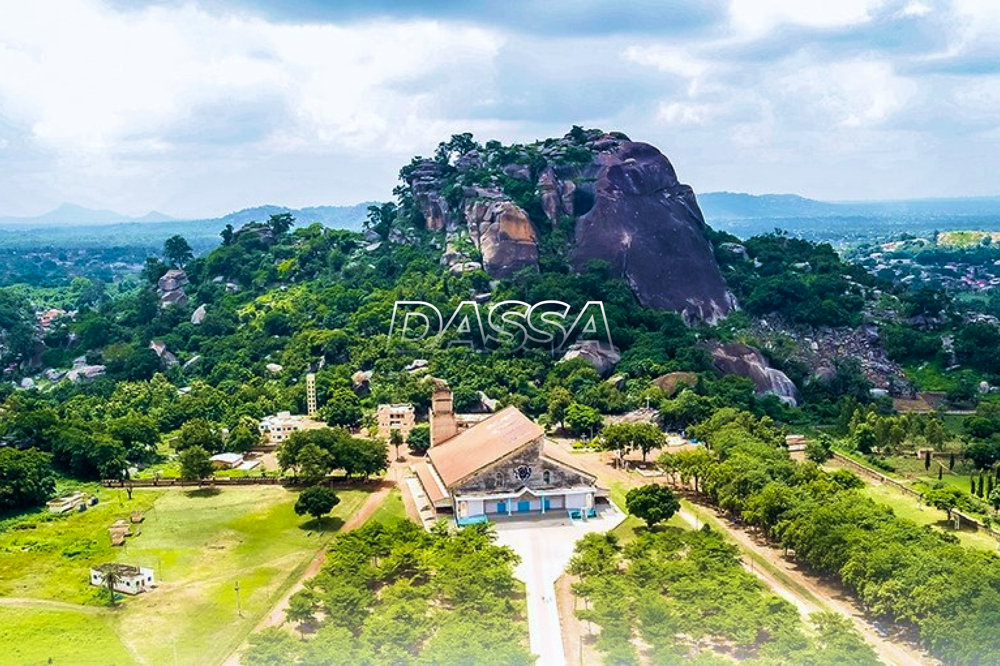
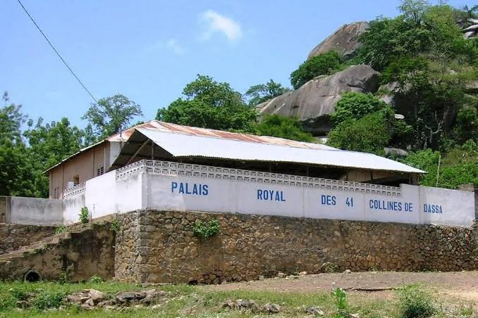
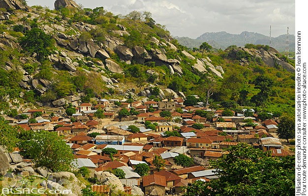
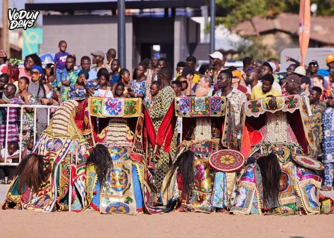
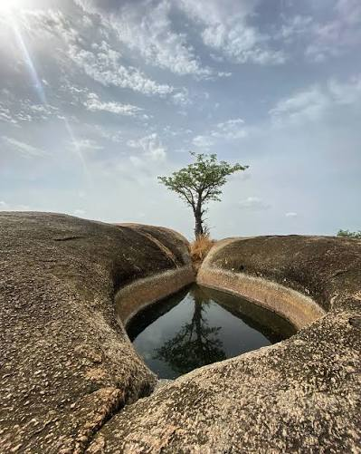

Un territoire ne se résume pas à une carte. Il se raconte à travers ses femmes et ses hommes, ses produits, sa culture et son patrimoine.
Le département des Collines regroupe plusieurs communes. Chacune porte une identité forte et des savoir-faire uniques.
Capitale des Collines, ville-carrefour et terre de pèlerinage.
Commune agricole, marché et carrefour des échanges.
Collines, palais royaux et tradition vivante.
Terres agricoles et production vivrière.
Terroir de produits naturels et de traditions.
Élevage, agriculture et paysages de savane.
Farines, jus, épices, produits dérivés du terroir.
Tissus, pagnes et créations artisanales.
Sculptures, objets bois et créations traditionnelles.
Miel, beurre de karité, plantes médicinales.
Plats et condiments typiques de la région.
Sacs, ceintures et accessoires en cuir.
Des collines, des paysages, des lieux de mémoire et des traditions vivantes.

Panoramas et sites spirituels chargés d'histoire. Les collines de Dassa-Zoumè sont un lieu de recueillement et de mystère qui surplombe la région.

Haut lieu de pèlerinage à Dassa-Zoumè. La Grotte Notre-Dame d'Arigbo accueille chaque année des milliers de fidèles venus du monde entier.

Mémoire des royaumes et chefferies des Collines. L'architecture traditionnelle des palais témoigne de la richesse historique et culturelle de la région.

Savanes, forêts et points de vue exceptionnels. La nature luxuriante et préservée des Collines offre un dépaysement total aux visiteurs.

Rituels, danses et célébrations locales. La culture des Collines s'exprime pleinement à travers ses couleurs, ses danses et ses traditions vivantes.

Parcours de découverte culturelle et naturelle. Que vous soyez marcheur aguerri ou amateur de balades, les sentiers des Collines vous mènent à la rencontre des populations locales.
Pendant la FIC 2026, profitez-en pour explorer le territoire et rencontrer ses acteurs.
Voir le programme